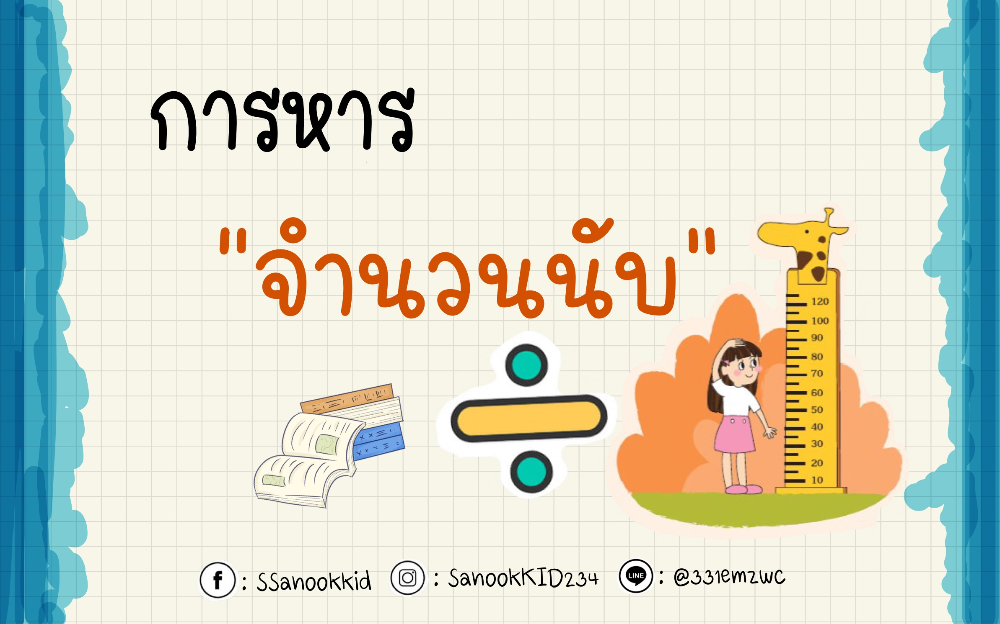

การหาร (÷)

การหาร
การหารเป็นการดำเนินการทางคณิตศาสตร์ที่ใช้สำหรับ การแบ่งจำนวนหนึ่งออกเป็นส่วน ๆ อย่างเท่า ๆ กัน หรือใช้เพื่อหาว่าจำนวนหนึ่งสามารถแบ่งออกเป็นกลุ่มที่มีขนาดเท่ากันได้กี่กลุ่ม การหารเป็นพื้นฐานสำคัญของคณิตศาสตร์ และสามารถนำไปใช้ในชีวิตประจำวันได้ เช่น การแบ่งขนมให้เพื่อน การแบ่งเงิน การจัดสิ่งของเป็นกลุ่ม หรือการคำนวณจำนวนสิ่งของในแต่ละกลุ่ม
ในการหาร เราใช้เครื่องหมาย (÷) หรือเครื่องหมาย (/) เป็นสัญลักษณ์แทนการหาร จำนวนที่นำมาแบ่งเรียกว่า (ตัวตั้ง) จำนวนที่ใช้แบ่งเรียกว่า (ตัวหาร) และจำนวนที่ได้จากการหารเรียกว่า (ผลหาร) หากไม่สามารถแบ่งได้ลงตัว จำนวนที่เหลือจะเรียกว่า (เศษ)
ตัวอย่าง
เช่น (12 ÷ 3 = 4) หมายความว่า นำจำนวน 12 มาแบ่งออกเป็น 3 ส่วนเท่า ๆ กัน จะได้ส่วนละ 4 ดังนั้น 4 จึงเป็นผลหารของ 12 และ 3
การหารมีความสัมพันธ์กับการคูณ เพราะการหารสามารถใช้ตรวจสอบคำตอบด้วยการคูณกลับได้ เช่น (12 ÷ 3 = 4) และ (4 × 3 = 12) การทำความเข้าใจเรื่องการหารจึงเป็นพื้นฐานสำคัญสำหรับการเรียนคณิตศาสตร์ในเรื่องที่ซับซ้อนขึ้น เช่น เศษส่วน อัตราส่วน ร้อยละ และการแก้โจทย์ปัญหา